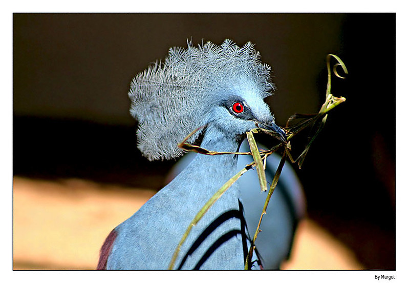

Pomba Goura
Características
Maior pomba ainda existente no mundo, ameaçada de extinção a Pomba Goura pode medir até 75 cm de comprimento e pesar até dois quilos.
Da família Columbidae, as quatro espécies possuem diferenças na plumagem.São agrupadas em dois pares de espécies-irmãs (originadas de um mesmo ancestral comum recente; espécies muito parecidas morfologicamente, mas com características biológicas específicas e que não se intercruzam), Goura cristata é espécie-irmã de Goura sclaterii e Goura scheepmakeri de Goura victoria. Fazem parte do nosso plantel Pomba Goura cristata e Victoria.
Apresentam plumagem azul-cinzenta, sendo mais escura nas asas em tons quase roxos e região dorsal e mais clara no peito, face e região ventral. Possui uma crista, também azul, em forma de leque, os olhos são vermelhos e contornados por uma faixa azul-escura. Prefere ficar no solo a voar, onde aproveita para ciscar sementes e também se alimenta de frutos.
O macho se exibe vocalizando, mostrando suas penas e dançando ao redor da fêmea para conquista-la. A fêmea bota apenas um ovo em um ninho construído nas copas das árvores, que é chocado por um período de 28 dias. Como os demais pombos, alimenta seus filhotes com “leite de pombo”, uma substância espessa parecida com coalhada, secretada no papo do pai e depois regurgitada. O casal é monogâmico e permanece unido por toda a vida.

Goura cristata, conhecida popularmente como pomba-goura, é uma espécie de ave da família Columbidae.
Peso: 2,1 kg (Adulto)
Nome científico: Goura cristata
Comprimento: 70 cm (Adulto)
Classificação superior: Goura
Estado de Conservação: Vulnerável (Decrescentes) Encyclopedia of Life
Classificação: Espécie
Espécie: G. cristata

Origem
Vivem em pequenos grupos nas florestas da Nova Guiné e em outras ilhas da Indonésia é nativa do Norte da nova guiné, habita principalmente as florestas do rio Siriwo até a costa. Entretanto, a destruição dasflorestas, aumento de propriedades de produção rural e a caça põem em perigo esta espécie.
Traços de personalidade da Goura Victoria
Essa espécie é muito rara e com preço elevado. Além disso, para criá-la é necessário um viveiro muito grande.
Apesar de ser um animal de grande porte, não é agressivo com os humanos, embora seja violento com outros pombos grandes. O ataque aos intrusos é feito por suas grandiosas asas.
Outro traço da sua personalidade é a sensibilidade a temperaturas mais frias, por isso precisam ser abrigadas durante o inverno.
Os pés carnudos podem ser vulneráveis a ulcerações produzidas pelo clima frio. Normalmente, andam pelos campos em pequenos grupos (no máximo 10).
Os zoológicos preservam essas aves porque não é uma espécie que prolifera muito. Já que colocam somente um ovo por gestação e a maior parte de sua população cativa está velha e é incapaz de procriar.
Os ninhos são feitos em moitas baixas ou até mesmo no chão. Nos cativeiros, os pais se tornam perigosos para outros animais, pois acreditam serem uma ameaça aos seus filhotes.

Alimentação
As Goura Victoria se alimentam de frutas e sementes do chão. Geralmente são imensas variedades de sementes, frutas, castanhas e até invertebrados. Elas gostam principalmente de figos selvagens.
Quando é criada em cativeiros, dificilmente os seus criadores conseguem copiar a sua dieta na natureza.
Portanto, as alimentam com bastão de sementes e vegetais que imitam as refeições naturais. Além disso, complementam a nutrição com uma mistura para pássaros exóticos.
É importante ressaltar que nos cativeiros podem ser usadas as areias para pássaros, que facilitam a limpeza de suas fezes.
Curiosidades
Uma curiosidade sobre esse pássaro é que o nome Goura Victoria é referência a uma grande figura histórica: a rainha britânica Victoria, que foi governante do Reino Unido nas últimas décadas do século XIX.
Outro fato curioso é que o macho, quando quer acasalar, inclina a cabeça exibindo a sua crista espetacular. Assim, faz um ritual de acasalamento nunca visto antes, emitindo “moos”, parecem muito com sons de alguém assoprando uma garrafa vazia.
Definitivamente não faz parte do acervo de canto de pássaros mais bonitos, porém são criaturas esplêndidas da natureza e por isso devem ser preservadas.
Assim, é necessário evitar o desmatamento, o qual se tornou uma enorme ameaça ao seu habitat. Por conta disso, está presente na lista amarela de Espécie Ameaçada da União Internacional para a Conservação da Natureza (IUCN), como vulnerável.